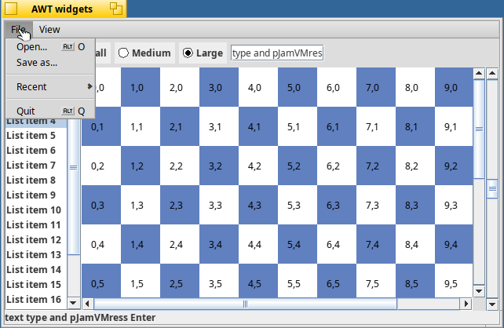
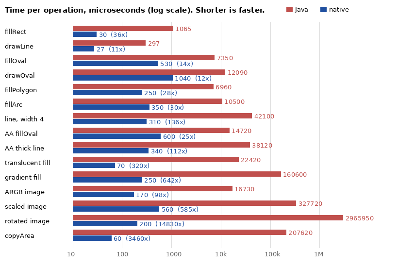
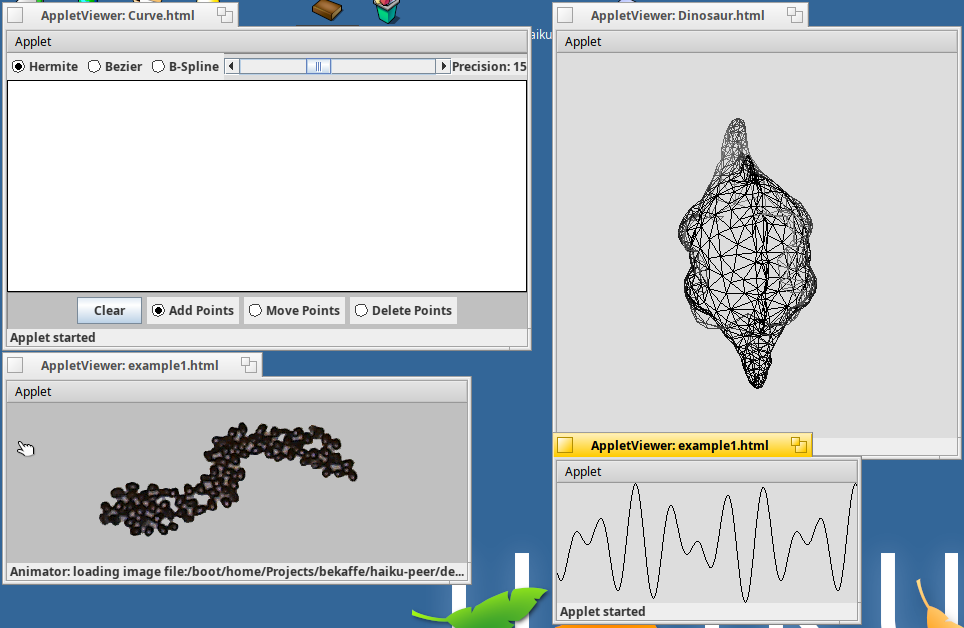
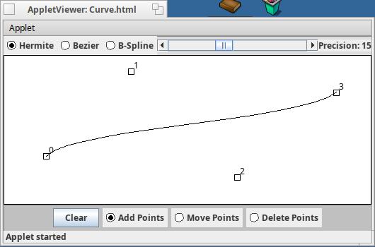
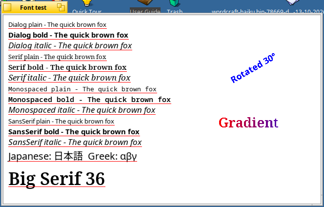

BeKaffe News
Friday, October 16th, 2026
Work has started on a second VM: JamVM. Kaffe is archived, and its interpreter is
slow. JamVM is a small VM for GNU
Classpath that ingelabs still maintains. It now runs on Haiku x86_64, with the same
Classpath build and the same Haiku peer: AWT and Swing programs, the demo applets and
sound all work. A CPU benchmark runs 17 times faster than on Kaffe, a thread stress test
36 times faster, and the drawing benchmark 20 times faster, with the same pixels.

The AWT widgets test on JamVM.
The Haiku port is offered to
JamVM upstream, together with a security
fix found during the tests: a program could define its own java.lang classes. Kaffe stays
the default VM for now. The README tells how to build and run JamVM.
Wednesday, October 14th, 2026 (night)
Shapes and images are now drawn in native code. Until now, GNU Classpath drew
every line, oval, polygon and picture in Java, which is slow on Kaffe's interpreter.
The Haiku peer now draws them in C++: lines, rectangles, filled and outlined shapes
(with and without antialiasing), translucent colours, gradients, and pictures that are
scaled or rotated. Most operations are 10 to 600 times faster. A rotated picture took
three seconds and now takes a fifth of a millisecond.

Time per drawing operation on Kaffe, before (Java) and after (native).

The demo applets with native drawing.

The Curve applet with a Hermite curve through four points.

Haiku fonts in Java. The red lines show that measured and drawn widths agree.
The rotated and gradient text use the new native shape code.
This work is also offered to GNU Classpath, as part of
the Haiku toolkit pull request.
To compare with the old Java drawing, start a program with
-Dgnu.java.awt.peer.haiku.javaDrawing=true.
Wednesday, October 14th, 2026 (evening)
Java text now looks like Haiku text. Haiku's own font engine measures and
draws all Java text, so it is smooth and evenly spaced, in Haiku's fonts. Chinese,
Japanese and other scripts come from Haiku's font fallback.
A new GNU Classpath. BeKaffe now uses
ingelabs/classpath, a maintained
continuation of GNU Classpath with about 200 more fixes than the 0.98 release. It builds
natively on Haiku, Kaffe runs on it without changes to the VM, and all our tests pass.
Back upstream. Kaffe's own repository is archived, but GNU Classpath is alive
again, so the Classpath half of this work is now offered there:
drag and drop fixes,
AWT fixes,
build and run-time fixes,
Haiku support and
the Haiku toolkit and sound
mixer.
STILL TO DO: shapes and images are still drawn in Java,
which is slow on Kaffe's interpreter.
Wednesday, October 14th, 2026
Yesterday's list of things to do is done too:
- Modal dialogs block the other windows of the program, and
always-on-top windows float above all windows.
- Drag and drop uses Haiku's own drag system. Drag files from Tracker into a
Java program, drag text from Java into StyledEdit, or drag between Java
components.
- Printing goes through the Haiku print server, with Haiku's page setup and
print dialogs, for both the old
PrintJob and the Java 2
PrinterJob.
- Input methods work, and Chinese and Japanese characters are drawn with
Haiku's fonts.
- The clipboard now carries pictures, files and other data, not only
text.
GNU Classpath also builds natively on Haiku now, and the patch fixes several old
Classpath bugs that stopped drag and drop and printing from working.
STILL TO DO: Java text is drawn by GNU Classpath's own font
engine, without smoothing and with uneven spacing. Next, we want Haiku's font engine to
draw all Java text. Drawing is still slow on Kaffe's interpreter.
Tuesday, October 13th, 2026 (evening)
The list of things to do from this morning is done:
- System clipboard. Copy and paste text between Java programs and other
Haiku applications. Command-X, C, V and A work in text fields.
- Mouse cursors. All Java cursor types use the Haiku system cursors, and
programs can make their own cursors from images.
- Sound. A new
javax.sound.sampled mixer plays through the
Haiku media server: clips with gap-free loops, streaming lines, and the old
8 kHz mu-law .au sounds of the 1996 applets. TicTacToe can say
“yahoo” again.
- FileDialog filters. A
FilenameFilter, or a name such as
*.txt, decides which files the Haiku file panel shows.
- Minimize and zoom. Programs can minimize, zoom and restore their frames,
and they get the window state events when the user does it.
- GNU Classpath build. A patch adds the peer to GNU Classpath 0.98.
configure now runs natively on Haiku, builds the peer, and makes it the
default AWT toolkit and sound mixer.
STILL TO DO: modal and always-on-top windows, drag and
drop, printing, and input methods. Drawing is still slow on Kaffe's interpreter.
Tuesday, October 13th, 2026
The last BeKaffe news, in August 2000, said that work was focused on a native widgets
version with a native look and feel. That version is now complete, for Haiku: Java AWT
programs run in Haiku windows with native Haiku menus and panels.
The new AWT peer works with Kaffe 1.1.10 and GNU Classpath 0.98 on Haiku R1/beta6 x86_64:
- Frames and dialogs are native Haiku windows.
- Menu bars, menus, check box menu items and shortcuts are native Haiku menus. Pop-up
menus and Choice lists are native Haiku pop-ups.
- FileDialog opens the Haiku file panel.
- Canvas, Panel, Label, Button, Checkbox, radio groups, TextField, Scrollbar, List,
ScrollPane and Choice all work.
- Swing works too.
- Old applets that use the JDK 1.0 event model (
action(),
handleEvent()) work again.
To celebrate, the old screenshots from bekaffe.sourceforge.net were taken again. The same
applets, in the same Kaffe 1.0 AppletViewer, BeOS in 1999 on the left and Haiku in 2026 on the right:

Various demos: Curve, TicTacToe, Blink and Animator.

ImageMap with its menu open, the WireFrame dinosaur and SimpleGraph.

Number one: BigPalindrome.
STILL TO DO: the system clipboard, mouse cursors, audio
(applets play no sound yet), file name filters in FileDialog, minimize and zoom, modal
window behavior, and integration into the GNU Classpath build. Kaffe runs as an
interpreter on x86_64, so drawing is slow.
The sources, the Kaffe and Classpath patches and the build instructions are in
the repository. If you are a Java/C++
developer with some experience of the Haiku API and would like to help, please
contact us.
This port was guided by one of the original
members of the BeKaffe team.
-> Old news